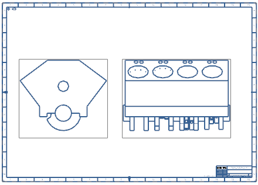

Estimated time to complete: 11–17 minutes
In this activity you will work with a series of NX8.5 and pre-Nx8.5 exact and lightweight views in a master model drawing in order to compare and contrast their behavior when the assembly model is in a loaded or unloaded state.

Open the Create exact and lightweight views activity.